Citrix Virtual Delivery Agent (VDA) 2411
Navigation
- Change Log
- VDA Virtual Machine Hardware
- Windows Configuration
- Install - Virtual Delivery Agent 2411
-
Workspace app:
- Workspace App
- Citrix File Access 2.0.4 for Workspace app for Chrome
- Remote Desktop Licensing Configuration
- Reduce C: Drive Permissions
- Configure Pagefile for Citrix Provisioning
- Direct Access Users Group - allow non-administrators to RDP to the VDA
- Registry Settings - ShellBridge, black screen, faster login, published app launch timeout, Screen Saver, HTML5 Upload Folder
- Restore Legacy Client Drive Mapping
- Print Driver for Mac and Linux Clients
- HTML5 Workspace app - SSL for VDA
- Anonymous Accounts
- Antivirus
- Optimize Performance
- Apps
- Seal and Shut Down
- Uninstall VDA
:idea: = Recently Updated
Change Log
- 2024 Dec 4 - Updated VDA Install for VDA 2411.
Hardware
Hypervisor Host Hardware
- G0-EUC Moore’s law of Windows 10 1903 - Newer versions of Windows 10 have lower density than older versions
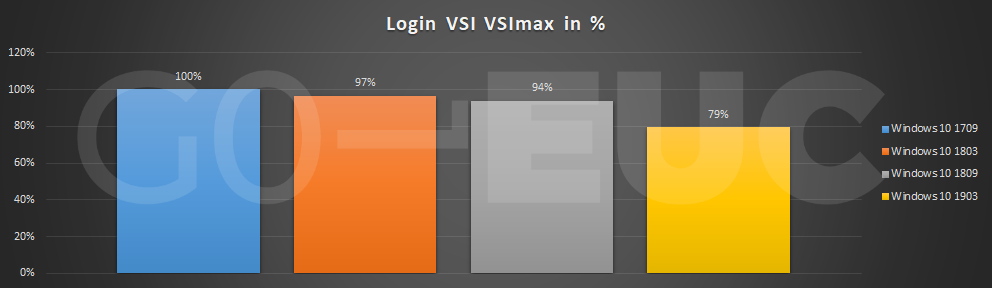
- Citrix Blog Post Citrix Scalability — The Rule of 5 and 10: Simply take the number of physical cores in a hypervisor host, multiply it by 5 or 10, and the result will be your Single Server Scalability. Use 5 if you’re looking for the number of Virtual Desktop VMs you can host on a box, and use 10 if you’re looking for the number of Virtual Apps user sessions you can host on a box.
Virtual Machine Hardware
-
Operating system version support: VDA version 2411 supports Windows 11, Windows 10 64-bit (1607 and newer), Windows Server 2025, Windows Server 2022, and Windows Server 2019.
- Windows Server 2016 is no longer supported. For Windows Server 2016, install VDA 2402 with the latest Cumulative Update. VDA 2402 will work with newer Delivery Controllers (e.g., Delivery Controller 2411).
- Cloud VDAs licensing – Cloud VDAs are supported if you are licensed for Citrix Hybrid Multi Cloud or Universal licenses. See CTX270373 Citrix Virtual Apps and Desktops: Public cloud support with Current Releases and Long Term Service Releases.
-
Windows 11 and vSphere - Citrix supports Windows 11 on vSphere 7 or newer. Windows 11 requires TPM. vSphere requires VM encryption of the VM files before it will let you add a TPM to the virtual machine. VM encryption requires a Key Provider. vSphere 7 has a Native Key Provider that does not need any additional servers or licenses. See VMware Tech Zone Windows 11 Support on vSphere.
-
In vSphere Client, in Inventory, click the vCenter object. On the right, on the Configure tab, scroll down to Key Providers and add a Native Key Provider.
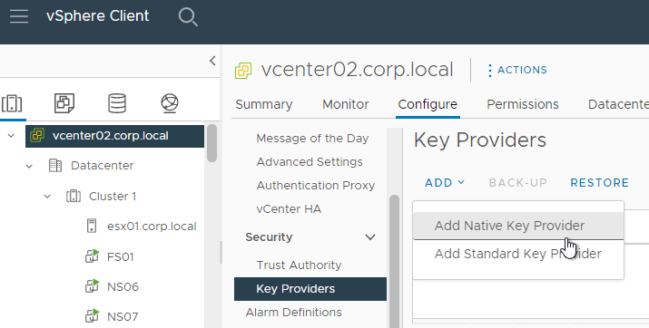
- After it's added, select it and then click Back-up to activate it.
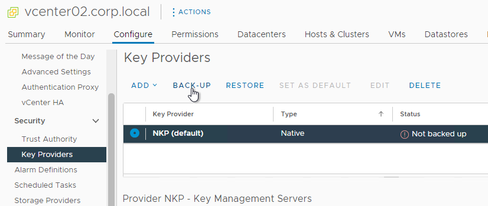
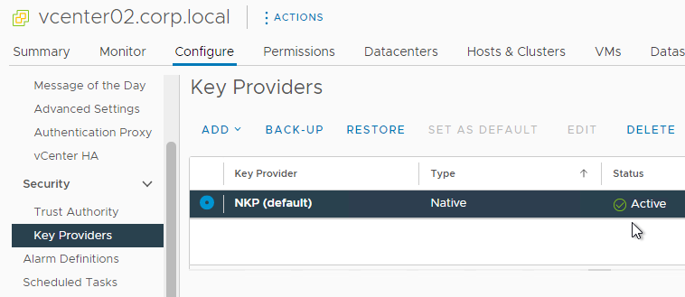
- Microsoft TechNet Blog - Say No to Windows 10 Long Term Servicing Channel (LTSC)
- No Edge
- From January 2020, Microsoft Office 365 will not be supported on LTSC.
- Non-security operating system fixes and enhancements may not get back-ported to LTSC.
- CTX224843 Windows 10 compatibility with Citrix Virtual Desktops
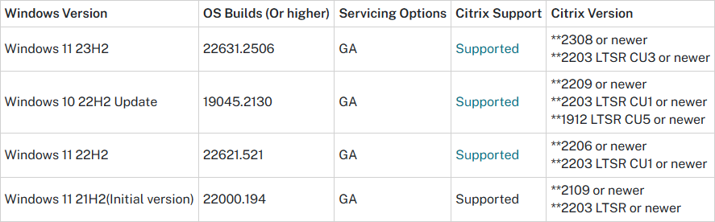
- CTX464127 Windows 11 2022 Update (22H2) & 2023 Update (23H2) – Citrix Known Issues
- Hypervisor Support - CTX131239 Supported Hypervisors for Virtual Desktops (XenDesktop) and Provisioning Services
- vSphere 7 is supported with CVAD 2106 and newer.
- SCVMM 2022 is supported with CVAD 2203 and newer.
-
Firewall - the UDP-based EDT protocol is enabled by default. Make sure the UDP ports are open for ICA/HDX:
-
UDP 1494
- UDP 2598
- UDP 443 - from Internet to Citrix Gateway.
- UDP 443 can also be used by internal ICA connections if VDA SSL is configured.
- For EDT through Citrix Gateway, make sure your Citrix ADC firmware is up to date, preferably 12.1 or newer. Then enable DTLS on the Gateway Virtual Server.
- TCP 443 and UDP 443 for HDX Direct.
- Citrix Blog Post What’s new with HDX in the 2402 LTSR
-
VDA virtual machine sizing:
-
For Windows 11 or Windows 10 virtual desktops, give the virtual machine: 2+ vCPU and 4+ GB of RAM - higher RAM for browsers running on the VDA
- For Windows Server 2022, 2019, or 2016 RDSH, give the virtual machine 8 vCPU, and 24-48 GB of RAM
- If using memory caching (MCSIO or PvS) for storage, add more RAM for the cache.
- Remove the floppy drive.
- Remove any serial or LPT ports.
-
If Windows 11 on vSphere:
-
When creating the Windows 11 virtual machine, enable Encrypt this virtual machine.
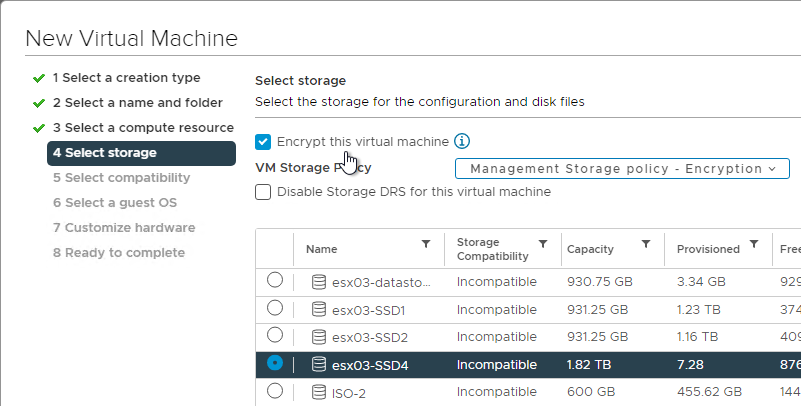
- In the Select a guest OS screen, if you don't see Windows 11, then select Windows 10.
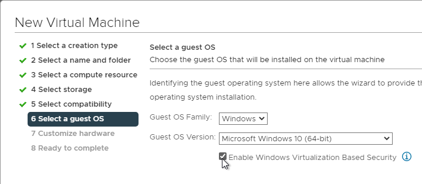
- On the Customize hardware page, make sure VM configuration files are encrypted. Hard disk encryption is not required, and you can deselect it. Only the VM configuration files must be encrypted.
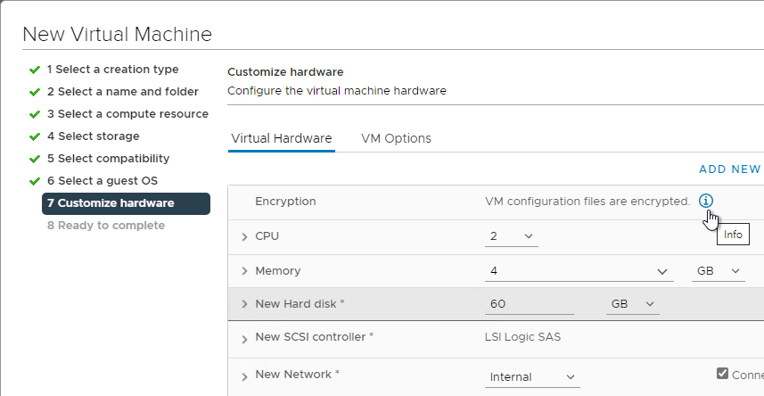
- Then you can use the Add New Device drop-down to add a Trusted Platform Module.
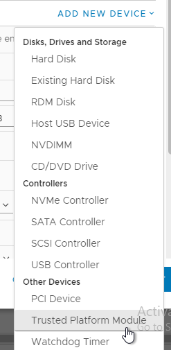
-
If vSphere:
-
To reduce disk space, reserve memory. Memory reservations reduce or eliminate the virtual machine .vswp file.
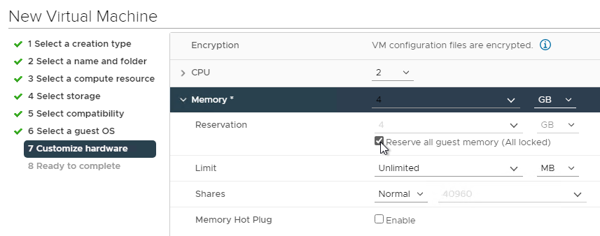
- The NIC should be VMXNET3.
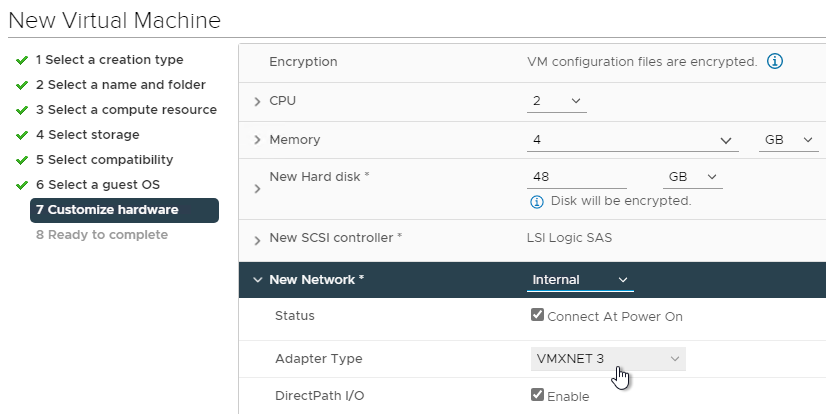
- For vGPU, set vgpu.hotmigrate.enabled Advanced vCenter Server Setting to true. (source = William Lam How to enable vGPU vMotion in vSphere 6.7 Update 1)
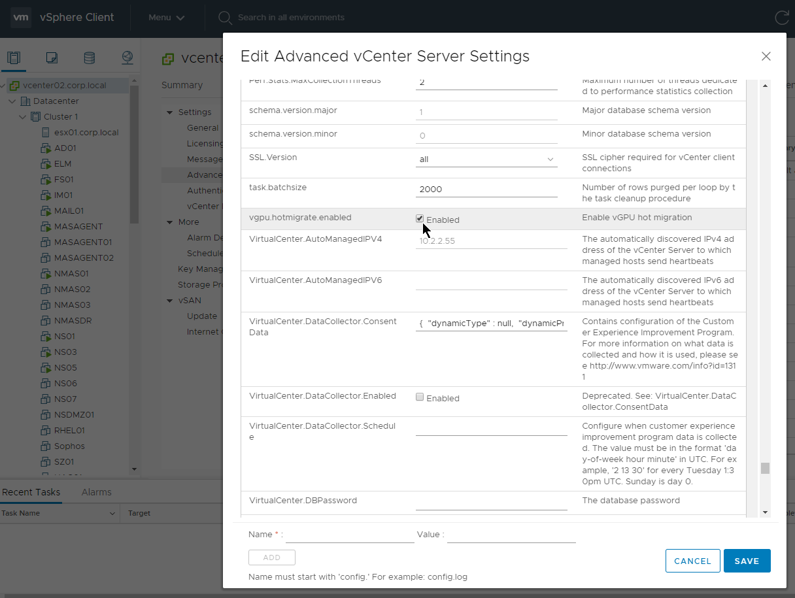
- App Layering and UEFI - In Citrix App Layering 2003 and newer, import UEFI images by running a script instead of using a connector.
-
If this VDA will boot from Citrix Provisioning:
-
For vSphere, the NIC Adapter Type must be VMXNET3.
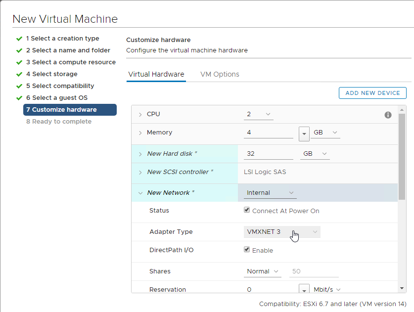
- For vSphere, configure the CD/DVD Drive to boot from IDE instead of SATA. SATA won't work with PVS.
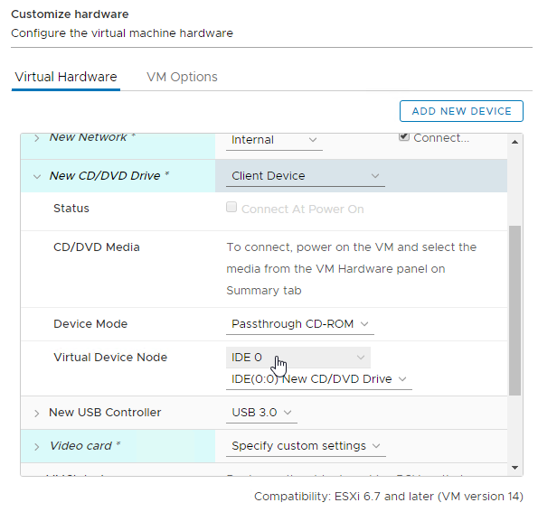
- Make sure you remove the SATA Controller after you change the CD/DVD Drive to be IDE.
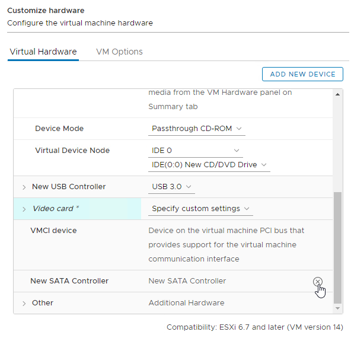
- Install the latest version of hypervisor drivers (e.g., VMware Tools).
- The vSphere Activity Monitoring Feature with NSX Guest Introspection feature uses a TDI driver (vnetflt.sys), which might cause a "Connection Interrupted" message when users log off of Citrix. See CTX221206 "Connection Interrupted" error message displayed while logging off ICA session.
If vSphere, disable NIC Hotplug
- Users could use the systray icon to Eject the Ethernet Controller. Obviously, this is bad.
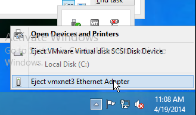
- To disable this functionality, power off the virtual machine.
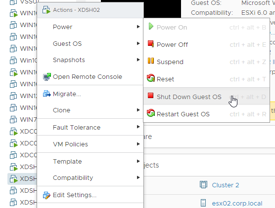
- Once powered off, right-click the virtual machine, and click Edit Settings.
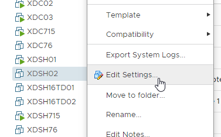
- Switch to the tab named VM Options.
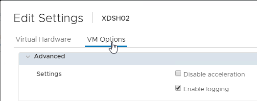
- Expand Advanced and then click Edit Configuration.
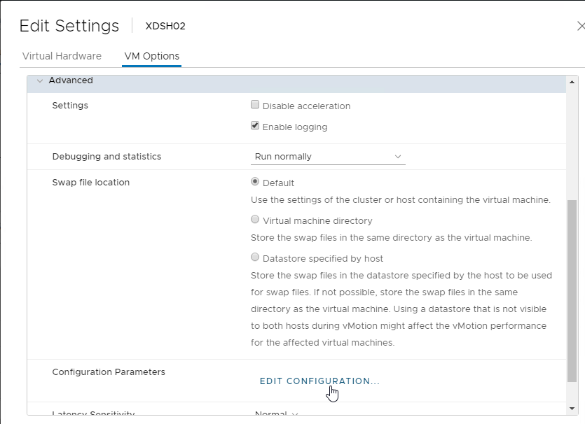
- Click the button labelled Add Configuration Params.
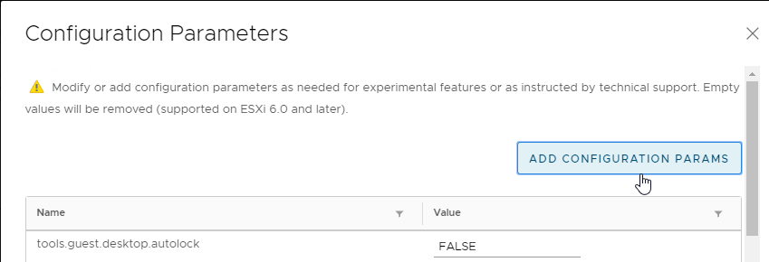
- For the Name, enter devices.hotplug.
- For the Value, enter false. Then click OK.
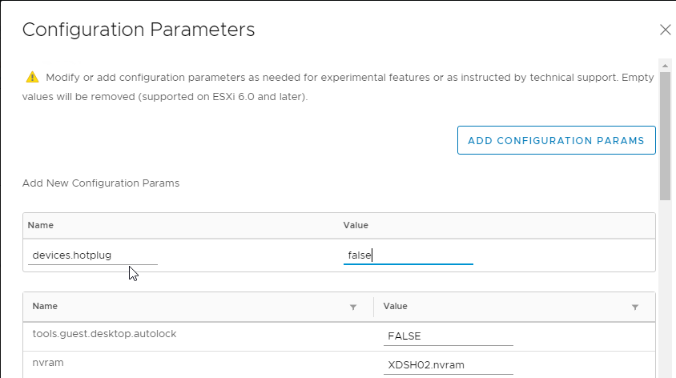
- The VM can then be powered on.
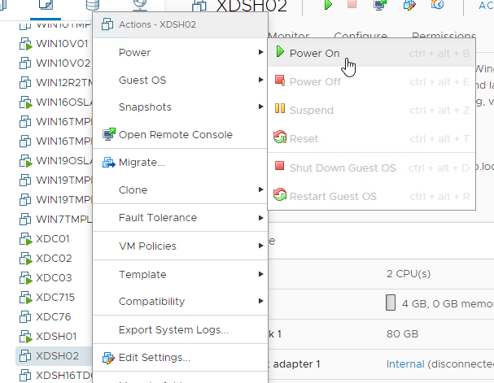
Windows Preparation
- Computer Group Policy – Make sure the Master VM is in the same OU as the Linked Clones so that the Master VM will get the computer-level GPO settings in its registry. Run gpupdate on the master after moving the VM to the correct OU. When Clones are created from the Master, the computer-level GPO settings will already be applied, thus eliminating timing issues.
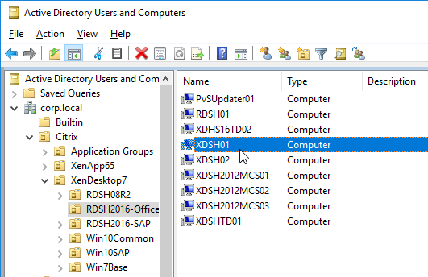
- If Server OS, disable IE Enhanced Security Configuration in Server Manager > Local Server.
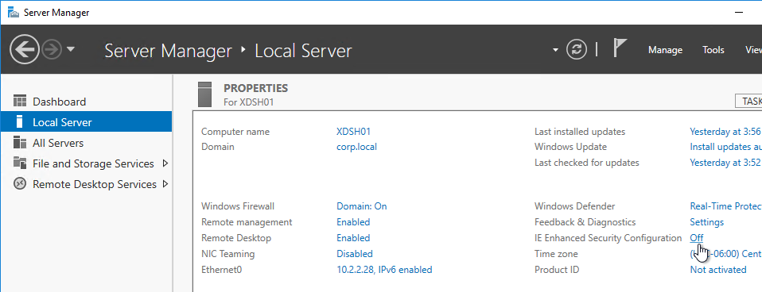
- Run Windows Update. Do not skip this step. Many VDA installation problems are fixed by simply updating Windows.
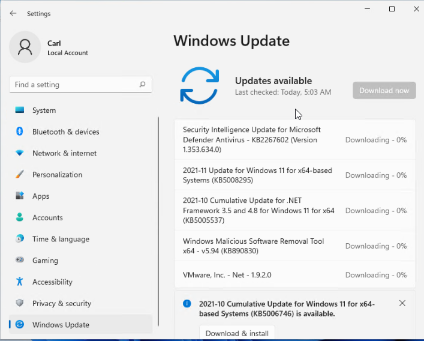
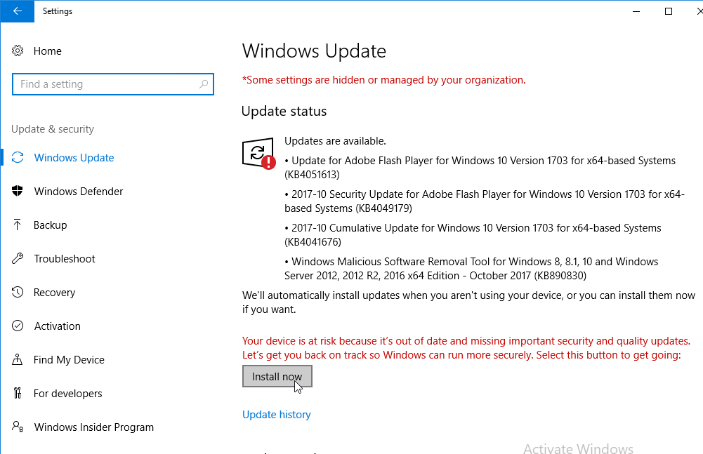
- Defer Feature Updates - For Windows 10, since Citrix VDA does not immediately support new Windows 10 versions, configure Windows Update to defer feature updates. In Windows 11, or in newer versions of Windows 10, defer updates can only be configured using group policy.
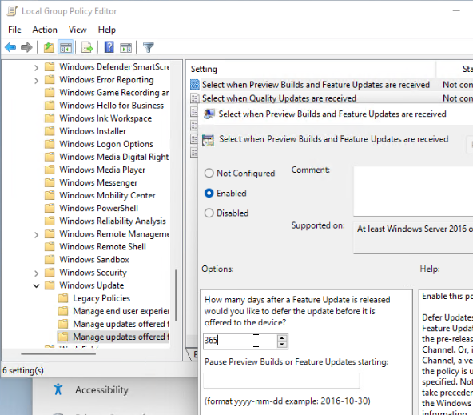
- Add your Citrix Administrators group to the local Administrators group on the VDA. Computer Management.
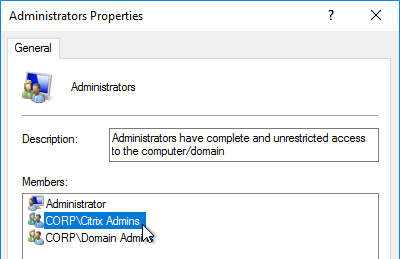
-
The Remote Desktop Services “Prompt for Password” policy prevents Single Sign-on to the Virtual Delivery Agent. Check registry key
HKEY_LOCAL_MACHINE\SOFTWARE\Policies\Microsoft\Windows NT\Terminal Services. If fPromptForPassword = 1 then you need to fix group policy. The following GPO setting will prevent Single Sign-on from working.Computer Configuration | Policies | Administrative Templates | Windows Components | Remote Desktop Services | Remote Desktop Session Host | Security | Always prompt for password upon connection
Or set the registry value
HKEY_LOCAL_MACHINE\SOFTWARE\Citrix\Portica\AutoLogon (DWORD) = 0x1. This registry value only applies to Single-session OS (aka Desktop OS), not Multi-session OS (aka Server OS). (source = comments) -
For Remote Assistance in Citrix Director, configure the GPO setting Computer Configuration | Policies | Administrative Templates | System | Remote Assistance | Offer Remote Assistance. See Jason Samuel - How to setup Citrix Director Shadowing with Remote Assistance using Group Policy for more details.
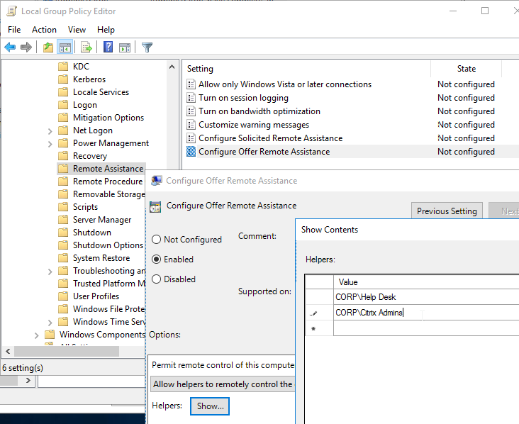
Install Virtual Delivery Agent (VDA) 2411
Mixed versions - You can upgrade the VDAs before you upgrade the Delivery Controllers resulting in VDAs being newer than the Delivery Controllers. You can upgrade the Delivery Controllers before you upgrade the VDAs. In other words, you can mix and match VDA versions and Delivery Controller versions.
CLI Install:
Command Line Install Options are detailed at Install using the command line at Citrix Docs.
Scripted Upgrade:
To automate the upgrade of VDA software on persistent machines, see Updated VDA Install / Upgrade / RDS Install / Desktop / Server / App Install Script by Kris Davis.
GUI Install:
- Mount the downloaded Citrix Virtual Apps and Desktops 2411 ISO and run AutoSelect.exe.
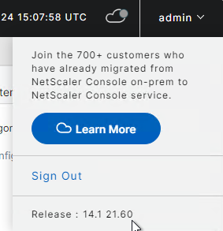
- Alternatively, you can download the standalone VDA package and run that instead. Go the main Citrix Virtual Apps and Desktops 2411 download page. Expand the section labelled Components that are on the product ISO but also packaged separately. There is also a VDA installer called Single-session OS Core Services that is designed for Remote PC deployments.
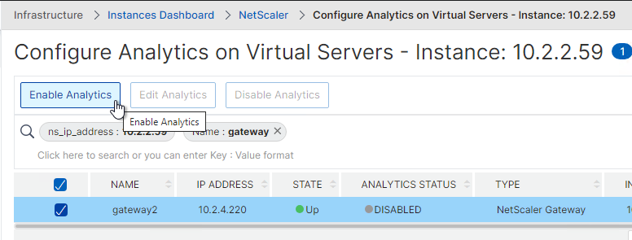
- Alternatively, you can download the standalone VDA package and run that instead. Go the main Citrix Virtual Apps and Desktops 2411 download page. Expand the section labelled Components that are on the product ISO but also packaged separately. There is also a VDA installer called Single-session OS Core Services that is designed for Remote PC deployments.
- Click Start next to either Virtual Apps or Virtual Apps and Desktops. The only difference is the product name displayed in the installation wizard.
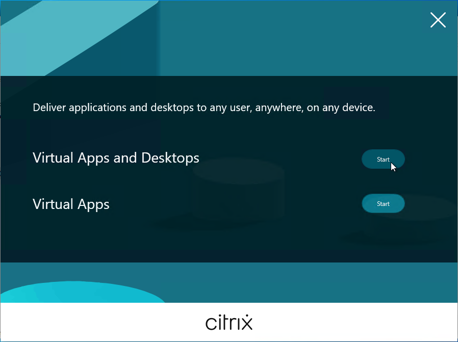
- On the top right, click Virtual Delivery Agent for Windows Multi-session OS (aka RDSH, aka Server OS), or Windows Single-session OS (aka virtual desktop, aka Desktop OS), depending on which type of VDA you are building.
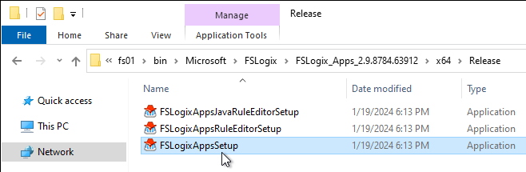
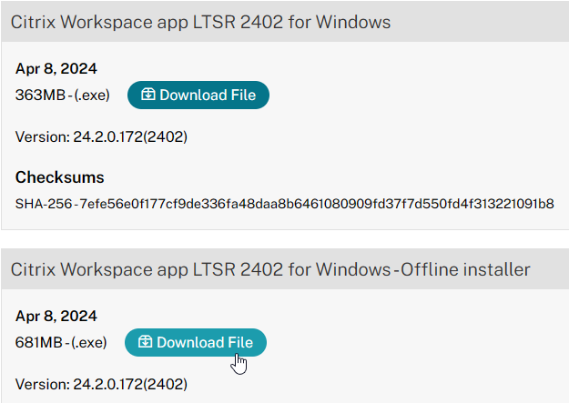
- In the Environment page, select Create a master MCS Image or Create master image to be used for Citrix Provisioning (PVS) streaming, and click Next.
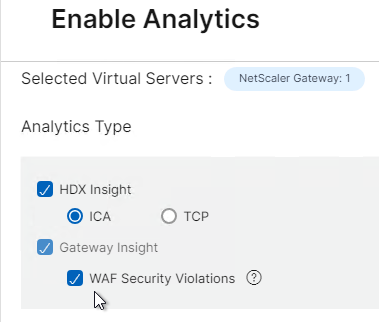
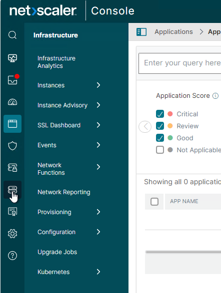
- In the Core Components page, if you don’t need Citrix Workspace App installed on your VDA, then leave the box unchecked. Workspace app is usually only needed for double-hop ICA connections (connect to first VDA, and then from there, connect to second VDA). Click Next.
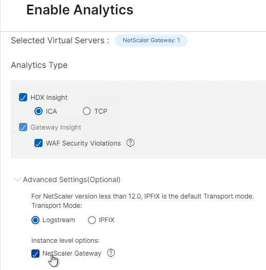
-
In the Additional Components page:
- Workspace Environment Management agent is no longer an option on this screen and is instead a separate box on the main splash screen.
- Single-session OS (not Multi-session OS) has an option for Citrix User Personalization Layer (UPL). This component comes from Citrix App Layering but does not need any of the App Layering infrastructure.
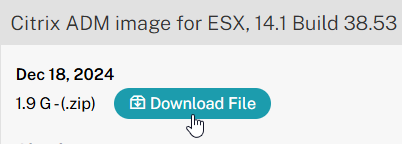
- Do not enable User Personalization Layer if you are also using Citrix App Layering.
- Warning: A Citrix Policy setting activates Citrix User Personalization Layer by setting the UNC path to where the User Personalization Layers should be stored. The Citrix Policy setting should only be deployed to non-persistent machines. If you deploy the Citrix Policy Setting to your Master Image, then your Master Image will be hosed, and you must rebuild it from scratch.
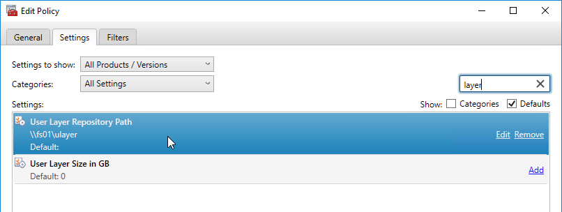
- There's an option for Machine Creation Services (MCS) storage optimization. This is also known as MCS I/O. Enable it if you have slow storage. The new Images node (Image Management) in Web Studio requires MCSIO to be installed.
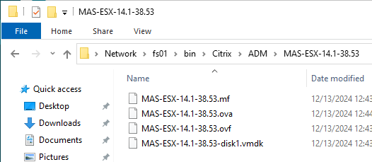
- VDA 2109 and newer have an option for VDA Upgrade Agent for Citrix Cloud deployments.
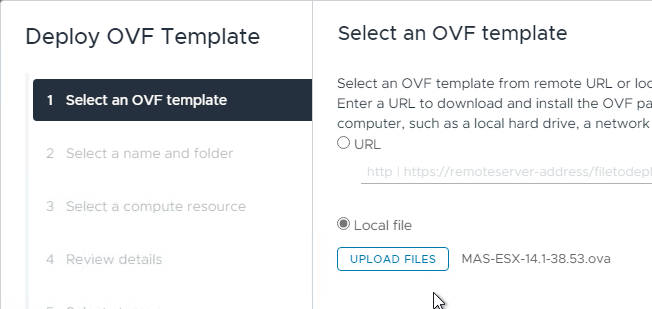
- There's an option for Citrix Backup and Restore Service that creates a restore point before installation or upgrade.
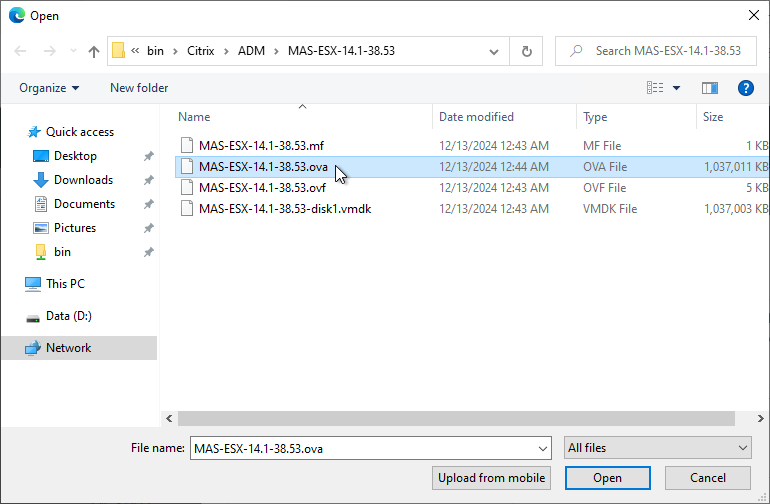
- Click Next.
- In the Delivery Controller page, select Do it manually. Enter the FQDN of each Delivery Controller (at least two). Click Test connection. And then make sure you click Add. Click Next when done.
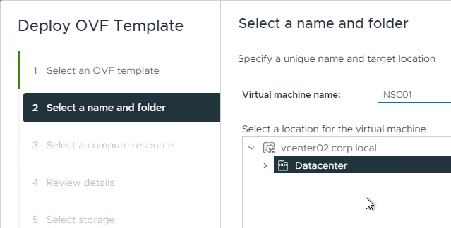
- VDA registration normally occurs over port 80. VDA 2407 and newer support VDA registration over SSL 443 (WebSockets). This requires trusted SSL certificates on the Delivery Controllers and registry values on the Delivery Controllers and the VDAs. See WebSocket communication between VDA and Delivery Controller at Citrix Docs.
- In the Features page, if you want to use the features, then check the boxes. Remote Assistance is for Director. The Cloud checkbox is only for telemetry and does not affect installation. Secure Default Settings in VDA 2407 and newer disables all data transfer virtual channels (e.g., Client Drive Redirection), but you can use Citrix Policy to re-enable them. Then click Next.
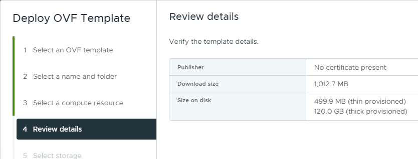
- In the Firewall page, VDA 2112 and newer have ports 52525 - 52625 for Screen Sharing. Port TCP/UDP 443 is for HDX Direct. Click Next.
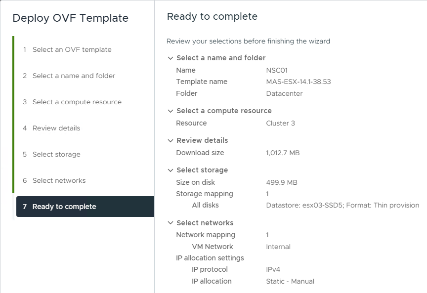
- In the Summary page, VDA 2407 and newer have a checkbox to Enable verbose logging. Click Install.
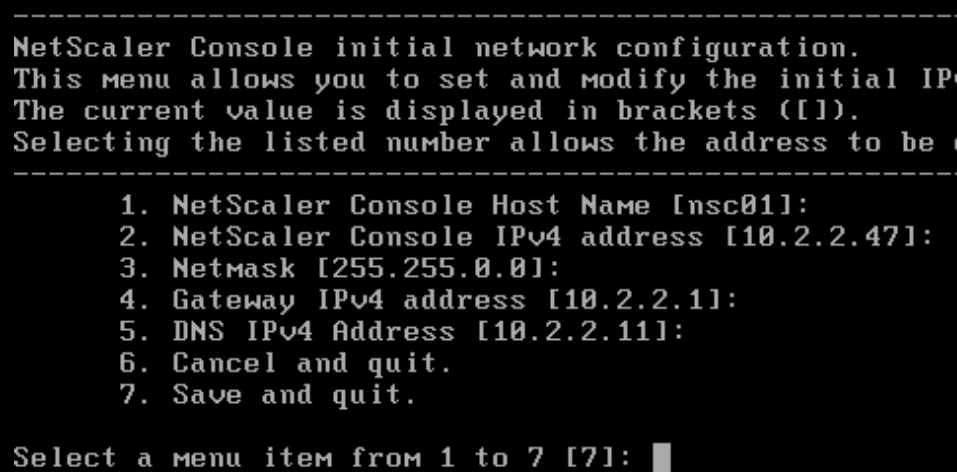
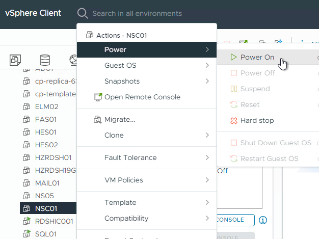
- Click Close if you are prompted to restart.
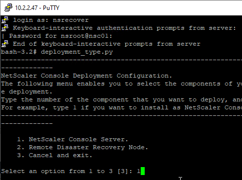
-
After the machine reboots twice, login and installation should continue.
-
If you see a Locate 'Citrix Virtual Apps and Desktops 7' installation media window, don't click anything.
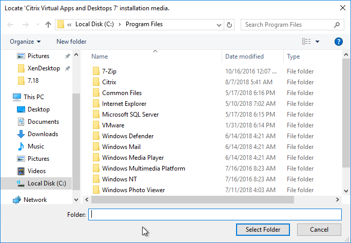
- Go to the Citrix_Virtual_Apps_and_Desktops_7_2411.iso file and mount it.
- Go back to the Locate 'Citrix Virtual Apps and Desktops 7' installation media window.
- On the left, expand This PC, and click the DVD Drive.
- Click Select Folder.
- Repeat these instructions every time you're prompted to restart.
- Installation will continue automatically.
- Note: NT SERVICE\CitrixTelemetryService needs permission to login as a service.
- In the Diagnostics page, you can optionally check the box next to Collect diagnostic information, click Connect, enter your Citrix account credentials, and then click Next.

- In the Finish page, click Finish to restart the machine again.

Microsoft FSLogix
If you need to roam the user's Outlook .OST file (Outlook Cached Mode), Outlook Search Index, OneDrive cache, OneNote data, SharePoint data, Skype data, and/or Teams data, then download, install, and configure Microsoft FSLogix. A common architecture is to enable FSLogix Office Container for the Office cache files and use Citrix Profile Management for all other roaming profile files and registry keys.
Microsoft FSLogix is free for all Microsoft RDS CALs, Microsoft Virtual Desktop Access per-user CALs, and all Microsoft Enterprise E3/E5 per-user licenses. Notice that per-device licenses are excluded. See Licensing Requirements at Microsoft Docs.
Microsoft Teams 2.1 requires FSLogix 2210 Hotfix 3.
Do the following to install Microsoft FSLogix on the VDA machine:
- Go to https://docs.microsoft.com/en-us/fslogix/install-ht and click the download link.
- Extract the downloaded .zip file.
- In the FSLogix \x64\Release folder, run FSLogixAppsSetup.exe.
- Check the box next to I agree to the license terms and conditions and click Install.
- In the Setup Successful page, click Restart.
- Make sure the Windows Search service is set to Automatic and Running.
- If Office is already installed, then repair the Office installation after installing and starting the Windows Search Service.
FSLogix is configured through Group Policy or by editing registry values on each FSLogix Agent machine.
Citrix Desktop Service
To prevent Citrix Desktop Service (BrokerAgent) from starting and registering with the Delivery Controllers before the boot process is complete, see Jeremy Saunders Controlling the Starting of the Citrix Desktop Service (BrokerAgent).
Customer Experience Improvement Program (CEIP)
Customer Experience Improvement Program (CEIP) is enabled by default. To disable it, create the registry value HKEY_LOCAL_MACHINE\SOFTWARE\Citrix\Telemetry\CEIP\**Enabled** (DWORD), and set it to **0** (zero). Also see CEIP at Citrix Insight Services at Citrix Docs.
See ../delivery-controller-cr-and-licensing/#ceip for additional places where CEIP is enabled.
Connection Quality Indicator
The Connection Quality Indicator tells the user the quality of the connection. Position of the indicator is configurable by the user. Thresholds are configurable through group policy.
Download it from CTX220774 Connection Quality Indicator and install it. The article is very detailed.
Group Policy templates are located at C:\Program Files (x86)\Citrix\Connection Quality Indicator\Configuration. Copy the files and folder to
Find the Group Policy settings under Computer Config | Policies | Administrative Templates | Citrix Components | Virtual Desktop Agent | CQI
Version 1.2 adds the GPO settings to the user half of a GPO, which lets you disable CQI for some users and enable it for others.
Notification display settings lets you customize the user notifications or disable them.
Connection Threshold Settings lets you set the notification thresholds.
Adaptive Transport
Adaptive Transport is an HDX/ICA protocol feature that tries to use UDP ports (EDT protocol) if they are open and falls back to TCP ICA if UDP connection is not successful. On higher latency connections, EDT (UDP) tends to perform better than traditional TCP ICA.
The Citrix Policy setting HDX Adaptive Transport defaults to Preferred, which means Adaptive Transport is enabled by default.
The newer Citrix EDT protocol use UDP Ports 1494/2598 for HDX connections to the VDA. The UDP ports should already be open in the VDA's Windows Firewall. In other words, HDX/ICA uses both TCP and UDP ports.
For EDT (and Adaptive Transport) through Citrix Gateway, make sure your Citrix ADC firmware is up to date, preferably 12.1 or newer. Then make sure DTLS is enabled on the Gateway Virtual Server. DTLS is the UDP version of SSL/TLS.
See Citrix Blog Post What’s new with HDX in the 2402 LTSR for new EDT features in 2402.
Slow Logons
Marvin Neys at XenApp slow logon times, user get black screen for 20 seconds at Citrix Discussions says that deleting HKCU\Software\Microsoft\Windows\CurrentVersion\UFH\SHC at logoff reduces logon times from 40 seconds to 6 seconds.
For additional logon delay troubleshooting, see Alexander Ollischer XenApp/XenDesktop – “Please Wait For Local Session Manager” message when logging into RDS. He found some Windows Updates that caused a logon delay.
VDA recalculates WMI filters on every reconnect. CTX212610 Session Reconnect 30 sec Delay - DisableGPCalculation - WMI Filters indicates that recalculation can be disabled by setting HKEY_LOCAL_MACHINE\SOFTWARE\Citrix\Reconnect\DisableGPCalculation (DWORD) to 1. Note: this registry value might stop Citrix Policies from being re-evaluated when users reconnect (source = Citrix Discussions).
Verify that the VDA registered with a Delivery Controller
- If you restart the Virtual Delivery Agent machine, or restart the Citrix Desktop Service...
- In Event Viewer > Windows Logs > Application log, you should see an event 1012 from Citrix Desktop Service saying that it successfully registered with a delivery controller.
-
If you don't see successful registration, then you'll need to fix the ListOfDDCs registry key.
- See VDA registration with Controllers at Citrix Docs.
- See The Most Common VDA Registration Issues & Troubleshooting Steps at Citrix Blogs.
- You can also run Citrix's Health Assistant on the VDA.
Citrix Workspace app
If you want to run Workspace app on the VDA machine, then upgrade it to Workspace app 240510.
Download and install Workspace app:
- Download Citrix Workspace app 2405.10.
- On the VDA, as administrator, run the downloaded CitrixWorkspaceFullInstaller.exe.
- Wait for prerequisites to install.
- In the Welcome to Citrix Workspace app page, click Continue.
- In the CITRIX LICENSE AGREEMENT page, check the box next to I agree and click Continue.
- In the Add-on(s) page, check the box next to Enable single sign-on. The Teams VDI Plugin is usually only needed on the endpoint device, not on the VDA. Click Install.
Citrix File Access 2.0.4 for Workspace app for Chrome OS
- If you support Workspace app for Chrome OS (Chromebook) and want published applications to open files on Google Drive, install Citrix File Access on the VDAs. Get it from the Citrix File Access for Chrome.
- Go to the extracted Citrix_File_Access_2.0.4 and run FileAccess.msi.
- In the Please read the File Access License Agreement page, check the box next to I accept the terms, and click Install.
- In the Completed the File Access Setup Wizard page, click Finish.
- File Access is listed in Apps & Features or Programs and Features as version 2.0.4.34.
- File Access has a default list of supported file extensions. The list can be expanded by editing the registry on the VDA. See CTX219983 Receiver for Chrome Error: Invalid command line arguments: Unable to open the file as it has an unsupported extension.
- To open a file from Google Drive, right-click the file and open the file using Citrix Workspace app.
Remote Desktop Licensing Configuration
On Windows 2016 and newer RDSH, the only way to configure Remote Desktop Licensing is using group policy (local or domain). This procedure is not needed on virtual desktops.
- For local group policy, run gpedit.msc. Alternatively, you can configure this in a domain GPO.
- Go to Computer Configuration > Administrative Templates > Windows Components > Remote Desktop Services > Remote Desktop Session Host > Licensing.
- Double-click Use the specified Remote Desktop license servers. Change it to Enabled, and enter the names of the RDS Licensing Servers (typically installed on Delivery Controllers). Click OK.
- Double-click Set the Remote Desktop licensing mode. Change it to Enabled and select Per User. Click OK.
- Optionally, you can install the Remote Desktop Licensing Diagnoser Tool. In the Server Manager > Add Roles and Features Wizard, on the Features page, expand Remote Server Administration Tools, expand Role Administration Tools, expand Remote Desktop Services Tools, and select Remote Desktop Licensing Diagnoser Tool. Then Finish the wizard.
- If it won't install from Server Manager, you can install it from PowerShell by running
Install-WindowsFeature rsat-rds-licensing-diagnosis-ui.
- In Server Manager, open the Tools menu, expand Remote Desktop Services (or Terminal Services), and click Remote Desktop Licensing Diagnoser.
- The Diagnoser should find the license server and indicate the licensing mode. If you're configured for Per User licenses, then it’s OK if there are no licenses installed on the Remote Desktop License Server.
Several people in Citrix Discussions reported the following issue: If you see a message about RD Licensing Grace Period has expired even though RD Licensing is properly configured, see Eric Verdumen No remote Desktop Licence Server availible on RD Session Host server 2012. The solution was to delete the REG_BINARY in HKEY_LOCAL_MACHINE\SYSTEM\CurrentControlSet\Control\Terminal Server\RCM\GracePeriod only leaving the default. You must take ownership and give admin users full control to be able to delete this value.
C: Drive Permissions
This section is more important for multi-session VDAs.
The default permissions allow users to store files on the C: drive in places other than their profile.
- Open the Properties dialog box for C:.
- On the Security tab, click Advanced.
- If UAC is enabled, click Change permissions.
- Highlight the line containing Users and Create Folders and click Remove.
- Highlight the line containing Users and Create files (or Special) and click Remove. Click OK.
- Click Yes to confirm the permissions change.
- If you see any of these Error Applying Security windows, click Continue. This window should appear multiple times.
- Click OK to close the C: drive properties.
Pagefile
If this image will be converted to a Citrix Provisioning vDisk, then you must ensure the pagefile is smaller than the cache disk. For example, if you allocate 20 GB of RAM to your VDA, and if the cache disk is only 15 GB, then Windows will have a default pagefile size of 20 GB, and Citrix Provisioning will be unable to move it to the cache disk. This causes Citrix Provisioning to cache to server instead of caching to your local cache disk (or RAM).
-
Open System.
- The quickest method of opening advanced system parameters is to run sysdm.cpl.
- In Windows Server 2016 and newer, you can right-click the Start button, and click System.
- In Windows 10 1703 or newer (or Windows Server 2019 or newer), search the Start Menu for advanced system settings.
- Another option is to open File Explorer, right-click This PC, and click Properties. This works in Windows 10 1703 and newer.
- Click Advanced system settings.
- On the Advanced tab, click the top Settings button.
- On the Advanced tab, click Change.
- Uncheck the box next to Automatically manage paging file size for all drives. Then either turn off the pagefile, or set the pagefile to be smaller than the cache disk. Don’t leave it set to System managed size. Click OK several times.
- The quickest method of opening advanced system parameters is to run sysdm.cpl.
Direct Access Users
When Citrix Virtual Delivery Agent (VDA) is installed on a machine, non-administrators can no longer RDP to the machine. A new local group called Direct Access Users is created on each Virtual Delivery Agent. Add your non-administrator RDP users to this local group so they can RDP directly to the machine.
From CTX228128 What is the HKLM\Software\Citrix\PortICA\DirectAccessUsers registry function: The HKLM\Software\Citrix\PortICA\DirectAccessUsers registry key determines which Local group the VDA references to determine if a user should be allowed Unbrokered RDP access. Members of the Local Administrators group will always be granted access. If the Registry Key does not exist, or gets deleted, VDA will always allow the Unbrokered RDP Connection. The Registry key and local group are created as part of the VDA installation process.
Registry
Links:
-
Citrix Docs has a list of HDX features managed through the registry. Example settings:
- Devices - Bloomberg keyboard, execute from client drive, Windows Image Acquisition application allow list
- General - HDX Reducer V4, EDT connection timeout, Rendezvous version (default V2), two-minute warning for idle or active sessions, audio loss tolerant mode
- Content Redirection
- Graphics - GPU acceleration of CUDA and OpenCL, Windows Presentation Foundation (WPF) rendering on GPU
- Multimedia - High-definition webcam streaming
- Citrix Blog Post What’s new with HDX in the 2402 LTSR
- Many of the new features are configured in Citrix Policy.
New Teams (version 2.1 or newer) no longer needs the msedgewebview2.exe registry entry as it is now whitelisted by default in VDA 2402 and newer.
ShellBridge for Published Apps
ShellBridge is a new Windows feature that fixes the following published app issues:
ShellBridge is enabled by default. If enabled, when users launch published apps, Windows will load background programs, like system tray icons, from the Run registry key. These extra processes might prevent sessions from closing after a user closes the published app. More info at CTX573346 Sessions not logging out after enabling Shellbridge.
You can disable ShellBridge by setting the following registry value. Disabling ShellBridge might prevent Office apps from signing in correctly.
- Key =
HKEY_LOCAL_MACHINE\SOFTWARE\Citrix\Citrix Virtual Desktop Agent- Value (DWORD) =
ShellBridge= 0
- Value (DWORD) =
Black Screen when launch Published Apps on Windows Server 2016
From CTX225819 When Launching an Application Published from Windows Server 2016, a Black Screen Appears for Several Seconds Before Application is Visible: Citrix and Microsoft have worked together to deliver code fixes for both Windows Server 2016 and Citrix Virtual Apps. Microsoft is targeting their KB4034661 patch for the third week of August 2017. This fix requires a registry edit to enable.
- Key =
HKLM\SOFTWARE\Citrix\Citrix Virtual Desktop Agent- Value (DWORD) =
DisableLogonUISuppression= 0
- Value (DWORD) =
Faster Login
From CTP James Rankin The ultimate guide to Windows logon time optimizations, part #6: DelayedDesktopSwitchTimeout tells the logon process to wait for a shorter time before switching from session 0 to the actual session in use.
- Key =
HKLM\SOFTWARE\Microsoft\Windows\CurrentVersion\Policies\System- Value (DWORD) =
DelayedDesktopSwitchTimeout= 1
- Value (DWORD) =
Published App Launch Timeout
From CTX128009 Published Application Fails to Appear: By default, VDA only waits 60 seconds for a published app to start. This is frequently too short.
- Key =
HKEY_LOCAL_MACHINE\SYSTEM\CurrentControlSet\Control\Citrix\wfshell\TWI- Value (DWORD) =
ApplicationLaunchWaitTimeoutMS= 180000 (time-out, in milliseconds)
- Value (DWORD) =
Screen Saver
From Citrix CTX205214 Screensaver Not Working in XenDesktop: By default, Screen Saver doesn't work on Desktop OS. To enable it, on the VDA, configure the following registry value:
- Key =
HKEY_LOCAL_MACHINE\SOFTWARE\Citrix\Graphics- Value (DWORD) =
SetDisplayRequiredMode= 0
- Value (DWORD) =
You might also have to enable the Citrix Policy setting named Allow windows screen lock. This setting was added in VDA 2402.
Logon Disclaimer Window Size
From Citrix Docs How to modify LogonUI to view Windows disclaimer message in full size when opening published applications: In VDA 2407 and newer, the LogonUI window should auto-size to the contents. However, if your logon disclaimer window has scroll bars, set the following registry values. Note: the registry key path changed in VDA 2407 and newer.
- Key =
HKEY_LOCAL_MACHINE\Software\Citrix\CtxHook\AppInit_DLLS\Seamless Hook- Value (DWORD) =
LogonUIWidth= 800 - Value (DWORD) =
LogonUIHeight= 600
- Value (DWORD) =
Login Timeout
From Citrix CTX203760 VDI Session Launches Then Disappears: VDA, by default, only allows 180 seconds to complete a logon operation. The timeout can be increased by setting the following:
- Key =
HKLM\SOFTWARE\Citrix\PortICA- Value (DWORD) =
AutoLogonTimeout= decimal 240 or higher (up to 3599).
- Value (DWORD) =
Workspace app for HTML5/Chrome Upload Folder
The Workspace app for HTML5 (or Chrome) lets upload files.
By default, the user is prompted to select a upload location. If you use the Upload feature multiple times, the last selected folder is not remembered.
Citrix CTX217351 How to Customize File Upload and Download Using Receiver for HTML5 and Receiver for Chrome. You can specify a default uploads location by editing HKLM\Software\Citrix\FileTransfer\UploadFolderLocation on the VDA. Environment variables are supported. When this value is configured, users are no longer prompted to select an upload location. The change takes effect at next logon.
Note: HTML5/Chrome Workspace app also adds a Save to My Device location to facilitate downloads.
Legacy Client Drive Mapping
Citrix CTX127968 How to Enable Legacy Client Drive Mapping Format on XenApp: Citrix Client Drive Mapping no longer uses drive letters and instead they appear as local disks. This is similar to RDP drive mapping.
The old drive letter method can be enabled by setting the registry value:
-
Key =
HKEY_LOCAL_MACHINE\SOFTWARE\Citrix\UncLinks(create the key)- Value (DWORD) =
UNCEnabled= 0
- Value (DWORD) =
When you reconnect, the client drives will be mapped as drive letters (starts with V: and goes backwards).
Print Driver for Mac/Linux Clients
Workspace app for Mac version 2112 and newer support PDF printing instead of Postscript printing. With PDF, it's no longer necessary to install the HP Color LaserJet 2800 Series PS driver on the VDA. Citrix Policy setting Universal driver preference must be adjusted to enable PDF printing as higher priority than PS (postscript) printing. See Citrix Docs for more details.
For Linux clients or older Mac clients, from CTX140208 Client printing from Mac and Linux clients on Windows 10, Server 2012 R2, and Server 2016. By default, non-Windows clients cannot map printers due to a missing print driver on the VDA machine.
- Download the HP Color LaserJet 2800 Series PS driver directly from Microsoft Catalog as detailed at CTX283355 Client Printing from Linux/MAC is not working on Windows Server 2016 and 2019. The Catalog is at https://www.catalog.update.microsoft.com/. Then search for hp color laserjet 2800. Pick the 6.1.7600.16385 driver version
- Extract the .cab file using 7-zip or similar.
- In Windows 10 1803+, open Printers & scanners. On the right (or scroll down) is a link to Print Server Properties.
-
In older versions of Windows, you can get to Print server properties from Devices and Printers.
- In Windows prior to Windows 10 1703, click Start, and run Devices and Printers.
- In Windows 10 1703, open Printers & scanners, then scroll down, and click Devices and printers.
- In the Printers section, highlight a local printer (e.g. Microsoft XPS Document Writer). Then in the toolbar, click Print server properties.
- Switch to the Drivers tab and click Change Driver Settings.
- Then click Add.
- In the Welcome to the Add Printer Driver Wizard page, click Next.
- In the Processor Selection page, click Next.
- In the Printer Driver Selection page, click Have Disk and browse to the .inf that you extracted from the .cab file.
- Select HP Color LaserJet 2800 Series PS and click Next.
- In the Completing the Add Printer Driver Wizard page, click Finish.
- In Windows prior to Windows 10 1703, click Start, and run Devices and Printers.
SSL for VDA
If you intend to use HTML5 Workspace app directly to VDAs, install certificates on the VDAs so that the browsers can connect WebSockets to the VDAs on TCP/SSL 443. Alternatively, HTML5 users can use Citrix Gateway ICA Proxy without installing any certs on the VDAs.
- If you install SSL certificates on the VDAs, you can enforce encrypted SSL connections from normal Workspace apps to the VDAs instead of the default unencrypted (or RC5) ICA protocol.
- HDX Direct is a preview feature that uses self-signed certs instead of CA-issued certs.
Notes:
- Each Virtual Delivery Agent needs a machine certificate that matches the machine name. This is feasible for a small number of persistent VDAs. For non-persistent VDAs, you’ll need some automatic means for creating machine certificates every time they reboot.
- As detailed in the following procedure, use PowerShell on the Delivery Controller to enable SSL for the Delivery Group. This forces SSL for every VDA in the Delivery Group, which means every VDA in the Delivery Group must have SSL certificates installed.
The following instructions for manually enabling SSL on VDA can be found at Configure TLS on a VDA using the PowerShell script at Citrix Docs.
- On the VDA machine, run certlm.msc.
- Right-click Personal, expand All Tasks, and click Request New Certificate to request a certificate from your internal Certificate Authority. You can use either the Computer template or the Web Server template.
- You can also use group policy to enable Certificate Auto-Enrollment for the VDA computers.
- You can also use group policy to enable Certificate Auto-Enrollment for the VDA computers.
- Browse to the Citrix Virtual Apps and Desktops ISO. In the Support\Tools\SslSupport folder, shift+right-click the Enable-VdaSSL.ps1 script, and click Copy as path.
- Run PowerShell as administrator (elevated).
- Run the command Set-ExecutionPolicy unrestricted. Enter Y to approve.
- In the PowerShell prompt, type in an ampersand (&), and a space.
- Right-click the PowerShell prompt to paste in the path copied earlier.
- At the end of the path, type in
-Enable - If there’s only one certificate on this machine, press Enter.
-
If there are multiple viable certificates, then you’ll need to specify the thumbprint of the certificate you want to use. Open the Certificates snap-in, open the properties of the machine certificate you want to use, and copy the Thumbprint from the Details tab.
In the PowerShell prompt, at the end of the command, enter
‑CertificateThumbPrint, add a space, and type quotes (").Right-click the PowerShell prompt to paste the thumbprint.
Type quotes (
") at the end of the thumbprint. Then remove all spaces from the thumbprint. The thumbprint needs to be wrapped in quotes.
-
There are additional switches to specify minimum SSL Version and Cipher Suites.
- Press <Enter> to run the Enable-VdaSSL.ps1 script.
- Press
twice to configure the ACLs and Firewall. - You might have to reboot before the settings take effect.
- Login to a Delivery Controller and run PowerShell as Administrator (elevated).
- Run the command
asnp Citrix.*
-
Enter the command:
Get-BrokerAccessPolicyRule -DesktopGroupName '<delivery-group-name>' | Set-BrokerAccessPolicyRule ‑HdxSslEnabled $truewhere
is the name of the Delivery Group containing the VDAs.
-
You can run
Get-BrokerAccessPolicyRule -DesktopGroupName '_<delivery-group-name>_'to verify that HDX SSL is enabled.
-
Also run the following command to enable DNS resolution.
-
Since the UDP-based EDT protocol is enabled by default, open port UDP 443 to the VDAs.
You should now be able to connect to the VDA using the HTML5 Workspace app from internal machines.
The Citrix blog post How To Secure ICA Connections in XenApp and XenDesktop 7.6 using SSL has a method for automatically provisioning certificates for non-persistent virtual desktops by enabling certificate auto-enrollment and setting up a task that runs after the certificate has been enrolled.
-
From Russ Hargrove at A note on VDA certificates in 7.14 at Citrix Discussions: Citrix installs a new "Citrix XenApp/XenDesktop HDX Service" certificate in the Personal store which breaks the automation of the Enable-VdaSSL.ps1 script. To fix the problem, modify the task scheduler powershell script to:
Anonymous Accounts
If you intend to publish apps anonymously then follow this section.
- Anonymous accounts are created locally on the VDAs. When VDA creates Anon accounts, it gives them an idle time as specified at HKEY_LOCAL_MACHINE\SYSTEM\CurrentControlSet\Control\Citrix\AnonymousUserIdleTime. The default is 10 minutes. Adjust as desired.
- Pre-create the Anon accounts on the VDA by running
**"C:\Program Files\Citrix\ICAConfigTool\CreateAnonymousUsersApp.exe"**. If you don’t run this tool, then anonymous users can't login.
- You can see the local Anon accounts by opening Computer Management, expanding System Tools, expanding Local Users and Groups and clicking Users.
- If you want profiles for anonymous users to delete at logoff, then you'll need to add the local Anon users to the local Guests group.
- If you open one of the accounts, on the Sessions tab, notice that idle timeout defaults to 10 minutes. Feel free to change it.
Group Policy for Anonymous Users
Since Anonymous users are local accounts on each Virtual Delivery Agent, domain-based GPOs will not apply. To work around this limitation, you’ll need to edit the local group policy on each Virtual Delivery Agent.
- On the Virtual Delivery Agent, run mmc.exe.
- Open the File menu, and click Add/Remove Snap-in.
- Highlight Group Policy Object Editor, and click Add to move it to the right.
- In the Welcome to the Group Policy Wizard page, click Browse.
- On the Users tab, select Non-Administrators.
- Click Finish.
- Now you can configure group policy to lock down sessions for anonymous users. Since this is a local group policy, you’ll need to repeat the group policy configuration on every Virtual Delivery Agent image. Also, Group Policy Preferences is not available in local group policy.
Antivirus
Install antivirus using your normal procedure. Instructions vary for each Antivirus product.
Microsoft’s virus scanning recommendations (e.g., exclude group policy files) - http://support.microsoft.com/kb/822158.
Every antivirus vendor has their own guidance for VDI. Search their knowledgebase for "non-persistent", "VDI", or "clones".
Citrix’s Recommended Antivirus Exclusions
Citrix Tech Zone Endpoint Security and Antivirus Best Practices: provides guidelines for configuring antivirus software in Citrix Virtual Apps and Desktops environments.
Citrix Blog Post Citrix Recommended Antivirus Exclusions: the goal here is to provide you with a consolidated list of recommended antivirus exclusions for your Citrix virtualization environment focused on the key processes, folders, and files that we have seen cause issues in the field:
- Set real-time scanning to scan local drives only and not network drives
- Disable scan on boot
- Remove any unnecessary antivirus related entries from the Run key
- Exclude the pagefile(s) from being scanned
- Exclude Windows event logs from being scanned
- Exclude IIS log files from being scanned
See the Blog Post for exclusions for each Citrix component/product including: StoreFront, VDA, Controller, and Citrix Provisioning. The Blog Post also has links to additional KB articles on antivirus.
Windows Defender Antivirus
Configure Microsoft Defender Antivirus on a remote desktop or virtual desktop infrastructure environment - Microsoft Docs
Configuring Microsoft Defender Antivirus for non-persistent VDI machines - Microsoft Blog
Disable Network protection and configure Citrix's antivirus exclusions (source = Citrix CTX319676 Users sessions are getting disconnected - Connection Interrupted)
Onboarding and servicing non-persistent VDI machines with Microsoft Defender ATP
Optimize Performance
Citrix Optimizer
Download Citrix Optimizer and run it.
- Citrix Blog Post Citrix Optimizer 2.6 – What’s new.
- Citrix Optimizer Community Template Marketplace - for more templates, add the Community Template Marketplace.
- Select a template (or download one from the Marketplace). Then click Optimize.
- To roll back Citrix Optimizer, see Citrix Blog Post Citrix Optimizer: How to Roll Back Changes.
James Rankin Improving Windows 10 logon time:
- Use Remove-AppXProvisionedPackage to remove Modern apps. See the article for a list of apps to remove. Also see James Rankin Everything you wanted to know about virtualizing, optimizing and managing Windows 10...but were afraid to ask - part #3: MODERN APPS
- Import a Standard Start Tiles layout (Export-StartLayout)
- Create a template user profile
David Wilkinson links:
- Citrix XenDesktop and Windows 10 Optimisation Script - "Optimise Windows 10 in XenDesktop based environment as per citrix optimisation recommendations/Various blogs and my own experience in running citrix environments."
- Citrix XenApp and Windows Server 2016 – Optimisation Script - "Optimise Windows Server 2016 in XenApp/RDS based environment as per citrix optimisation Guide in 2008 R2/Various blogs and my own experience in running citrix environments."
Citrix Links:
-
CTX232313 Citrix Provisioning Services: Slow Login Performance with Windows 10 VDA Machines says that if you removed all Store apps, then the Network Location Awareness Service can be disabled.
- Or enable the local group policy setting Computer Configuration | Administrative Templates | Network | Network Isolation | Subnet definitions are authoritative.
- Or enable the local group policy setting Computer Configuration | Administrative Templates | Network | Network Isolation | Subnet definitions are authoritative.
Microsoft links:
- Windows Virtual Desktop Optimization Tool (VDOT) - Github
- Microsoft Docs Optimizing Windows 10, version 2004 for a Virtual Desktop Infrastructure (VDI) role
- Microsoft Docs Recommended settings for VDI desktops contains a list of settings with their Default Value and Recommended value for VDI use.
- Microsoft TechNet Blog Guidance on Disabling System Services on Windows Server 2016 with Desktop Experience contains a spreadsheet with a list of services categorized as follows:
Optimization Notes:
- If this machine is provisioned using Citrix Provisioning, do not disable the Shadow Copy services.
- Citrix CTX213540 Citrix UPS Printers are not visible via Control Panel, Devices And Printers - don't disable the Device Setup Manager Service
- Citrix CTX131995 User Cannot Launch Application in Seamless Mode in a Provisioning Services Server when XenApp Optimization Best Practices are Applied. Do not enable NtfsDisable8dot3NameCreation.
Applications
Choose installers that install to C:\Program Files instead of to %appdata% or %localappdata%. Search for VDI or Enterprise versions of the following applications. These VDI versions do not auto-update, so you'll have to update them manually.
- Google Chrome - Chrome Enterprise
- Microsoft Edge - Edge for Business
- Microsoft Teams - Teams for VDI
- Microsoft OneDrive - Install the sync app per machine
- Zoom - Zoom VDI
- WebEx - WebEx VDI
- Cisco Jabber - Jabber VDI
- Etc.
Seal and Shut Down
If this VDA will be a master image in a Machine Creation Services or Citrix Provisioning catalog, after the master is fully prepared (including applications), do the following:
- Go to the properties of the C: drive and run Disk Cleanup.
- If Disk Cleanup is missing, you can run cleanmgr.exe instead.
-
Windows 10 1703 and newer has a new method for cleaning up temporary files.
- Right-click the Start button and click System.
- Click Storage on the left and click This PC (C:) on the right.
- Click Temporary Files.
- Check boxes and click Remove files.
- On the Tools tab of the local C: drive Properties, click Optimize to defrag the drive.
` - If KMS Server licensing, run slmgr.vbs /dlv and make sure it is licensed with KMS Server and has at least one rearm remaining. It is not necessary to manually rearm licensing since MCS will do it automatically.
- Run Delprof2 to clean up local profiles. Get it from http://helgeklein.com/download/.
- Machine Creation Services and Citrix Provisioning require DHCP.
- Session hosts (RDSH) commonly have DHCP reservations.
- Base Image Script Framework (BIS-F) automates many sealing tasks. The script is configurable using Group Policy.
- Shut down the master image. You can now use Studio (Machine Creation Services) or Citrix Provisioning to create a catalog of linked clones.
Uninstall VDA
Uninstall the VDA from Apps & Features or Programs and Features.
Then see CTX209255 VDA Cleanup Utility.
To run the VDA Cleanup Tool silently:
- Execute VDACleanupUtility.exe /silent /noreboot to suppress reboot.
- Once the VDACleanupUtility has finished executing, setup Auto logon for the current user.
- Reboot.
- After reboot, tool will launch automatically to continue Cleanup.
Another option is to delete CitrixVdaCleanup value under HKLM\Software\Microsoft\Windows\CurrentVersion\RunOnce. Then after reboot, run VDACleanupUtility.exe /silent /reboot to indicate that it's running after the reboot.